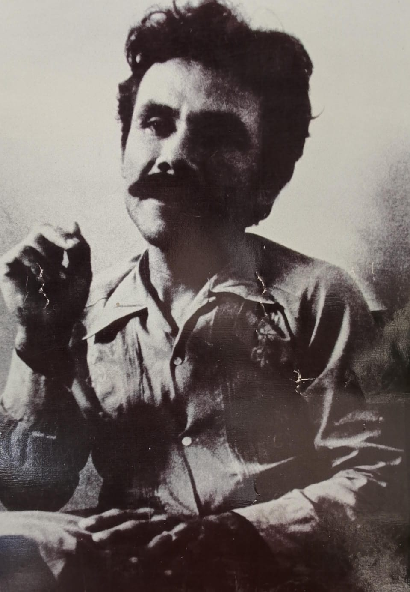

Haz clic en cualquiera de las siguientes secciones para desplegar y conocer a fondo los antecedentes, la toma del terreno, las leyes comunitarias y la respuesta estatal.

El movimiento se inspira y fundamenta en tres experiencias históricas de resistencia:
En las décadas de 1960 y 1970, el modelo económico del "Milagro Mexicano" generó una fuerte crisis en el campo, desempleo y despojo de tierras ejidales. Esto provocó la migración masiva de campesinos pobres de estados como Guerrero y Morelos hacia centros urbanos, generando una grave crisis de vivienda y hacinamiento.
Florencio Medrano Mederos, alias "El Güero Medrano", originario de Tlatlaya, Estado de México. Pasó por luchas campesinas, viajó a China en 1969 a recibir adiestramiento militar e ideológico, y formó parte del Partido Revolucionario del Proletariado Mexicano (PRPM).
Para 1972, Medrano funda la Asociación Nacional Obrero Campesino Estudiantil (ANOCE) para aglutinar a familias migrantes, obreros, campesinos y estudiantes bajo una alianza popular.
Bajo la dirección de Florencio Medrano y la ANOCE, alrededor de siete mil personas (familias de campesinos despojados, jornaleros y obreros) invadieron y ocuparon el fraccionamiento "Villa de las Flores" en el estado de Morelos. Fundaron ahí la Colonia Proletaria Rubén Jaramillo.
La toma no era solo para solicitar lotes de vivienda, sino que formaba parte planeada de la primera fase de la Guerra Popular Prolongada maoísta: construir un territorio autónomo con apoyo de las masas que funcionara a mediano plazo como base para el lanzamiento de un posterior movimiento armado de liberación socialista.
Para mantener el orden interno, sostener la colonia y preparar la autodefensa, la comunidad creó sus propias formas de autogobierno y reglamentos populares:
Las decisiones políticas, organizativas y de justicia se tomaban de forma democrática comunitaria mediante asambleas.
Trabajo comunitario obligatorio y voluntario para la limpieza, trazado de calles, construcción comunal y faenas.
Ante la radicalización y la fuerza del proyecto, el gobierno federal y el Ejército Mexicano ejecutaron una ocupación militar armada de la colonia.
A diferencia de la política de exterminio directo y desaparición forzada aplicada en Guerrero, en la Colonia Rubén Jaramillo el Estado aplicó una estrategia contrainsurgente combinada:
Florencio Medrano pasó a la clandestinidad y continuó con la lucha guerrillera hasta su posterior fallecimiento en combate.